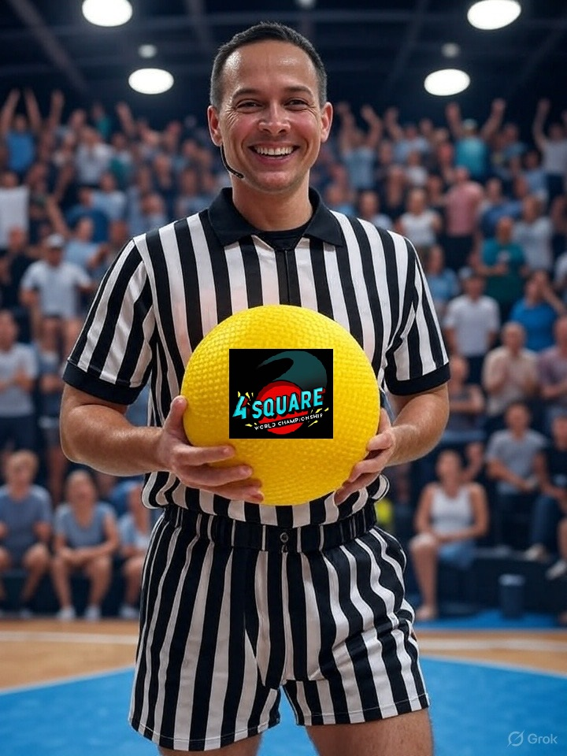
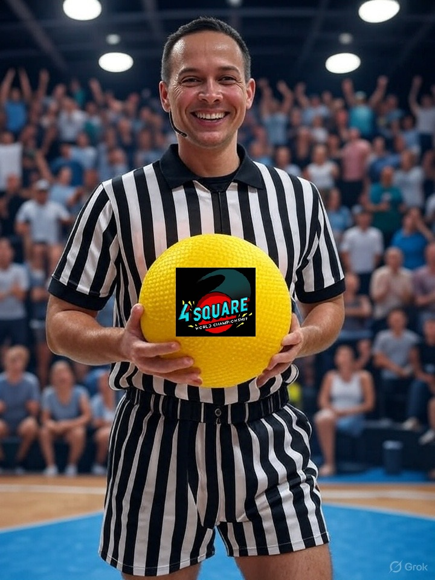

Rules of Four Square

 

📜 Introduction
The rules below represent the official standards used at the Four Square World Championships, held annually in Bridgton, Maine. While Four Square is played around the world with many different rule variations, this rulebook specifically governs the gameplay, court layout, and tournament structure for the World Championship.
For those interested in alternate styles or playground adaptations, we invite you to explore the "Other Rules" section at the bottom of this page.
🏐 Equipment
Ball: An 8.5-inch rubber playground ball inflated to 2 lbs.
- Four Square requires minimal equipment, making it easy to play almost anywhere.
- Games can take place on any flat surface—chalk-drawn courts, taped-off indoor/outdoor floors, or professionally painted courts.
- Any ball that reliably bounces can be used, though a standard playground ball (8.5-inch rubber) is typically preferred for consistency and control.
🟦 Court Specifications
Dimensions: A 16 x 16-foot square divided into four equal 8 x 8-foot squares, numbered 1–4 with 4 and 1 diagonal from each other.

Lines:
- All court lines are 1 inch wide.
- Outside lines are in-bounds; a ball landing on these remains in play.
- Inside lines (dividing squares) are out-of-bounds; a ball landing on these results in an "out.".
🚫 Out-of-Play Zone
To ensure fairness and promote returnable gameplay, and since overhand and closed-fist strikes are allowed where some four square rules allow only underhand hits, an Out-of-Play Zone is used to discourage unreturnable shots.

🎯 Objective
Be the last player standing! The goal is to be the last player remaining after all other players have been eliminated. When play begins, each square contains a player along with the players waiting in line. The player in square 4 serves the ball to square 1 who then hits the ball into a square other than their own. The hits go on until someone gets “out”.
👣 Player Positioning
- Square 4 serves to Square 1.
- Players may move freely as long as they don't commit interference.
📤 Serving the Ball
- The server (player in Square 4) must stand within six inches of the back corner if an adult, or within one foot if a child.
- The ball must be bounced once in the server’s own square, then struck with one or both hands into Square 1.
- The serve must be controlled and non-aggressive, with standard rotation, and may not rise above the receiving player’s head height at any point.
- The receiving player in Square 1 is allowed one do-over per round by calling “one bad.”
- If the serve is illegal—such as landing outside Square 1 or hitting an internal line—the server is out.
✋ Ball Striking Rules
- Only hands and wrists may strike the ball. “Hands” are defined as the area from the wrist to the fingertips, including the backs of the hands.
- The ball may be struck with one or both hands, using either open palms or closed fists, as long as it is one deliberate and clean hit.
- No carrying, catching, holding, or double-hits are allowed at any time.
- Other then the serve, spinning the ball is allowed as long as the hit that produces the spin is not a carry or other illegal hit.
- Kids' divisions require a bounce before hitting.
- Any player who strikes the ball illegally is considered out.
- PLACEHOLDER: LINK GOING TO MORE INFO ABOUT SPINNING. SEE TEMPLATE SITE/RULES/THE BALL
🙅 Interference & Poaching
- Once the ball bounces in a square, only that player may hit it.
- If the ball bounces in a square and another player makes contact with the ball (deliberately or not), and the player whose square the ball bounced in makes an attempt to play the ball and had a realistic chance of getting it, the player who made contact with the ball is out.
- If the player whose square the ball bounced in does not make a legitimate attempt to play the ball and another player makes contact with the ball (deliberate or not), the player whose square the ball bounced in is “out”.
- Boys + Girls/Children’s Divisions: The ball must bounce in a square for a player to hit the ball (no air balls).
- Players are not able to physically impede another player from the ball. Impeding another player from getting the ball is another form of “interference” and results in an out.
❌ Elimination (Out)
- Letting the ball bounce twice.
- Hitting it out-of-bounds, the inside lines or the out-of-play zone.
- Carrying, poaching, interfering.
🏟️ Court Environment
- Depending on venue, the ball bouncing off walls = in play.
- If a player had a legit chance and it hits a chair or person: round restarts.
- If no chance to return it: player is out.
⚔️ Showdown Rule
Disputes? Settle it with a 1-on-1 showdown using just 2 squares. Higher square serves.
🚫 Prohibited Moves
- Blackjack: Catching the ball.
- Spinzies: Using two hands to spin.
- Short-stopping: Hitting ball to self.
- Body Language: Using body parts other than hands.
👫 Divisions
- Boys 14 & under
- Girls 14 & under
- Men 15+
- Sub-division: Senior Men 40+
- Women 15+
- Sub-division: Senior Women 40+
🏆 Tournament Structure
Round 1 (Scoring Round):
- Kids play together; adults separated by gender.
- 45 minutes of play across multiple courts.
- Each "out" is tallied.
Round 2 (Semifinals):
- Divisions separated again — 25 minutes of play.
- “Outs” continue from Round 1.
- Top 8 players per division advance.
Championship Round:
- Finalists compete in a “10-out” untimed final.
- Pick-from-hat method to determine where players begin in squares/lines.
- Square 2 is vacated with 3 players left.
- 2 remaining players go 1v1 in adjacent squares.
- Last player standing is crowned champion.